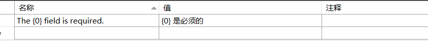

环境
- dotnet core 3.1 LTS
需求
- 为了让WEB API后端支持中文友好信息（只是我单纯的前端不想多写判断代码而已。。。），想把原本的ModelError英文变成中文返回
- 当然数据验证可以重构一个中文版本，但是毕竟官方有轮子何必自己造轮子呢。
配置Startup类
ConfigureService
1 | services.AddLocalization(options => options.ResourcesPath = "Resources"); |
Configure
1 | var defaultCulture = new CultureInfo("zh-CN"); |
配置虚拟共享类
前一步ConfigureService里有个SharedResource类，根据官方文档所设置的虚类 目录放在Project.API.SharedResource.cs
1
2
3
4
5
6
7namespace Project.API
{
public class SharedResource
{
}
}
创建资源映射文件
在项目Project根目录下创建Configure中options.ResourcePath对应的文件夹,在该文件夹中创建API.SharedResource.zh-CN.resx资源文件如下图所示 
测试用例
新建TestController.cs控制器 1
2
3
4
5
6
7
8
9
10
11
12
13
14
15
16
17
18
19
20
21
22
23
24
25
26
27
28
29
30
31
32[]
[]
public class TestController : ControllerBase
{
private IStringLocalizer _localizer;
public TestController(IStringLocalizerFactory localizerFactory)
{
var type = typeof(SharedResource);
var assemblyName = new AssemblyName(type.GetTypeInfo().Assembly.FullName);
_localizer = localizerFactory.Create(typeof(SharedResource));
}
[]
public ActionResult test([FromBody]Test test)
{
return BadRequest(new
{
message = _localizer["{0} is required"]
});
}
}
public class Test
{
[]
public string Test1 { get; set; }
[]
public string Test2 { get; set; }
}
Swagger 测试
将body删除空白，然后提交

结果
如下图所示，可以看出当前映射已经生效了
不过这里Test2还是没有更改
之后再进行研究一下